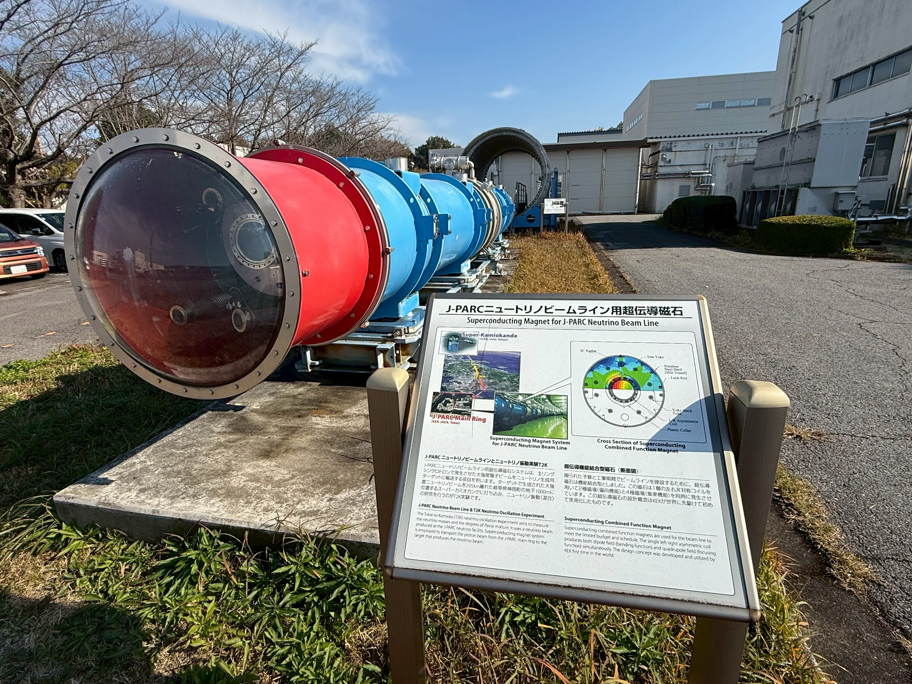
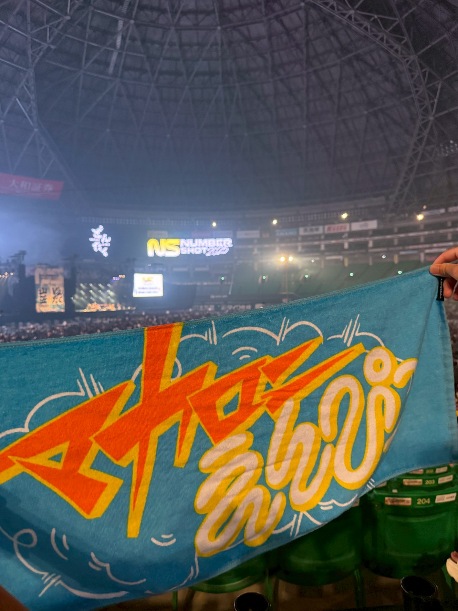

Private Life
About Me
広島のしがない物理学徒です。一番好きな分野は統計力学です。現在は, 高エネルギー物理実験で用いられる, Monolithic Active Pixel Sensorという非常に小さく薄い粒子検出器の研究をしています。趣味はサッカー観戦と邦ロックを聴くことです。どうぞよしなに。
Birthday
0000年12月25日 (諸説あり)
Birthplace
ゴミ箱
Blood Type
モンスターエナジー型
Location
Hiroshima, Japan
Language
Japanese, English, C++
Interests
Soccer
海外サッカーの観戦が好きです。好きなクラブはレアル・マドリードで好きな選手はベリンガム選手です。かっこいい。
Coding
コーディングは学部4年から本格的に始めたのであまり慣れていません。誰か僕に教えてくれる人, 募集中です。
Key Words
High Energy Physics
Nuclear Physics
QGP (Quark Gluon Plasma)
MAPS
ALICE
CERN
CT
Contact
Address
〒739-8526
広島県東広島市鏡山1-3-1
広島大学 理学部棟 709号室
広島県東広島市鏡山1-3-1
広島大学 理学部棟 709号室
Lab Website
Quark Physics LaboratoryGallery / Snapshots

Photo at KEK

Football Match

Music Live